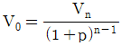
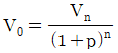
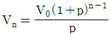
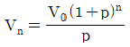
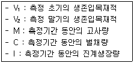
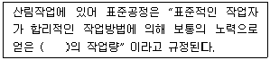
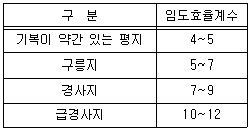

산림산업기사 (2014-03-02 기출문제)
1과목: 조림학
1. 산림 입지를 결정하는 환경 조건으로 옳지 않은 것은?
- 기상환경
- 작업환경
- 생물환경
- 토양환경
(정답률: 72%)

2. 종자의 결실량을 증가시키기 위한 방법으로 옳지 않은 것은?
- 간벌을 실시하여 생육공간을 확장한다.
- 수피의 일부를 제거하여 C.N율을 높인다.
- 단근을 실시하여 질소의 흡수를 조장한다.
- 줄기에 환상박피, 철선묶기 등의 자극을 준다.
(정답률: 69%)
3. 양수 또는 음수에 관한 설명으로 옳지 않은 것은?
- 소나무는 양수이고, 주목은 음수이다.
- 양수는 음수보다 광포화점이 높다.
- 양수는 음수보다 낮은 광도에서 광합성 효율이 낮다.
- 양수와 음수는 햇빛을 좋아하는 정도가 아니라 그늘에 견딜 수 있는 내음성의 정도에 따라 구분 한다.
(정답률: 75%)
4. 제벌에 대한 설명으로 옳지 않는 것은?
- 소나무와 낙엽송의 첫 번째 제벌은 식재 후 7~8년이 적정하다.
- 간벌이 시작될 때까지 2~3회 제벌하는 것을 원칙으로 한다.
- 제벌은 비용만 투입되고 벌채되는 불량목은 거의 이용대상이 되지 못한다.
- 제벌시기는 나무의 고사 상태를 알고 맹아력을 감소시키기 위해서는 겨울철에 실행하는 것이 좋다.
(정답률: 65%)
5. 어린나무 가꾸기에 가장 적절한 시기는?
- 12 ~ 2월
- 3 ~ 5월
- 6 ~ 8월
- 10 ~ 12월
(정답률: 75%)
6. 산림작업종의 주요 인자로 옳지 않은 것은?
- 벌채의 종류
- 임도의 위치
- 새로운 임분의 기원
- 벌채 및 갱신의 작업면적 크기
(정답률: 60%)
7. 적지적수는 종자의 산지와 조림지와의 밀접한 관계가 있다. 어떤 점에 가장 중점을 두어야 하는가?
- 채종원에서 채취한 종자에 의한 묘목을 식재한다.
- 결실되는 지조가 적은 나무에서 채취한 종자에 의한 묘목을 식재한다.
- 병충해에 대한 저항력이 강한 나무에서 채취한 종자에 의한 묘목을 식재한다.
- 조림지 부근에서 또는 기후풍토가 비슷한 곳에서 채취한 종자에 의한 묘목을 식재한다.
(정답률: 81%)
8. 발아시험에 있어서 단기간 내 일시에 발아된 종자의 수를 전체 시료 종자의 수로 나누어 백분율로 나타 낸 것은?
- 효율
- 발아세
- 발아력
- 발아율
(정답률: 69%)
9. 일본잎갈나무의 꽃눈이 분화하는 시기는?
- 3월경
- 5월경
- 7월경
- 9월경
(정답률: 72%)
10. 광색소에서 파이토크롬(phytochrome)의 설명으로 옳지 않은 것은?
- 암흑속에서 기른 식물체 내에서 적게 검출된다.
- 햇빛을 받으면 합성이 일부 금지되거나 파괴된다.
- pyrrole 4개가 모여서 이루어진 발색단을 가진다.
- 분자량이 120000 Dalton 가량 되는 두 개의 동일 한 polypeptide로 구성되어 있다.
(정답률: 67%)
11. 파종량 산출 공식(산파)에서 득묘율(또는 잔존율)은?
- 0.7 ~ 0.9
- 0.5 ~ 0.7
- 0.3 ~ 0.5
- 0.1 ~ 0.3
(정답률: 52%)
12. 산벌작업법에 관한 설명으로 옳지 않은 것은?
- 갱신기간은 보통 10 ~ 20년 정도이다.
- 예비벌, 하종벌 및 후벌로 나누어 진다.
- 윤벌기에 비하여 짧은 갱신기간 중에 실시하는 벌채이다.
- 성숙목이 많은 불규칙한 산림과 이령림 갱신에 알맞은 작업법이다.
(정답률: 71%)
13. 종자를 산파할 때 필요한 파종량을 산출하려고 한다. 1m2에 잔존본수 400그루, 득묘율 30%, 종자효율 70%, 1g당 종자알수 150개일 때 m2당 파종량은?
- 3.8g
- 8.8g
- 10.5g
- 12.7g
(정답률: 50%)
14. 간벌의 효과로 옳지 않은 것은?
- 산림관리 비용을 크게 줄인다.
- 임분의 수직구조 및 안정화를 도모한다.
- 직경생장을 촉진하여 연륜폭이 넓어진다.
- 우량한 개체를 남겨서 임분의 유전적 형질을 향상 시킨다.
(정답률: 70%)
15. 신엽 또는 정엽부터 결핍증상이 나타나는 영양소는?
- 인
- 칼슘
- 칼륨
- 질소
(정답률: 61%)
16. 종자에 수분침투와 가스교환이 잘 되지 않을 때 실시하는 발아 촉진 방법으로 옳은 것은 ?
- 탈납법
- 재워묻기
- 온탕 침적법
- 냉수 침적법
(정답률: 62%)
17. 다음 중 낙엽활엽수의 접수 채취 시기로 옳은 것은?
- 12월 초순
- 10월 하순
- 4월 중순
- 2월 중순
(정답률: 45%)
18. 다음 중 성격이 다른 숲은?
- 맹아림
- 천연림
- 원시림
- 불완전 천연림
(정답률: 87%)
19. 파종상에서 2년, 이식상에서 1년 키운 실생묘를 바르게 표기한 것은?
- 1-2
- 2-1
- 1-1-1
- 2-1-1
(정답률: 83%)
20. 다음 중 산성토양에서 가장 강한 수종은?
- 소나무
- 호두나무
- 오리나무
- 측백나무
(정답률: 78%)
2과목: 산림보호학
21. 다음 수병 중 바이러스 발생 원인으로 옳은 것은?
- 불마름병
- 뿌리혹병
- 흰가루병
- 모자이크병
(정답률: 85%)
22. 임목에 군집하여 고사 시키는 조류로 옳지 않은 것은?
- 백로
- 왜가리
- 딱다구리
- 가마우지
(정답률: 79%)
23. 다음중 충영형성 해충으로 옭은 것은?
- 솔나방
- 밤나무혹벌
- 솔알락명나방
- 미끈이하늘소
(정답률: 70%)
24. 대추나무 빗자루병 방제에 일반적으로 쓰이는 약제는?
- 보르도액
- 페니실린
- 석회 황합제
- 옥시테트라사이클린
(정답률: 88%)
25. 솔나방이 산란하는 일반적인 알의 수량으로 옳은 것은?
- 50개
- 100개
- 500개
- 1000개
(정답률: 86%)
26. 솔잎혹파리의 방제 방법으로 옳지 않은 것은?
- 등화유살법
- 천적이용법
- 수간주사법
- 약제살포법
(정답률: 76%)
27. 전균사체(promycelium)에 관한 설명으로 옳은 것은?
- 일종의 담자기이다.
- 일종의 자낭구이다.
- 일종의 균사체이다.
- 일종의 분생포자이다.
(정답률: 44%)
28. 향나무 녹병의 병원균이 중간기주 배나무 속에서 잎 앞면에 오렌지색의 별무늬가 나타나고, 그 위에 흑색의 미립점으로 밀생하는 것으로 옳은 것은?
- 녹포자기
- 여름포자퇴
- 겨울포자퇴
- 녹병정자기
(정답률: 55%)
29. 밤나무혹벌의 월동 장소와 월동 충태로 옳은 것은?
- 눈 속에서 알로 월동
- 지피물 속에서 알로 월동
- 눈 속에서 유충으로 월동
- 지피물 속에서 번데기로 월동
(정답률: 67%)
30. 낙엽송 잎떨림병의 방제를 위하여 낙엽을 모아서 태우는 이유로 옳은 것은?
- 병원균이 생체에서 월동하므로
- 병원균이 토양 중에서 월동하므로
- 병원균이 종자에 붙어서 월동하므로
- 병원균이 병환부 또는 죽은 기주체에서 월동하므로
(정답률: 75%)
31. 대기 중 공중습도가 30% 이하일 때 산불발생 위험도 와의 관계는?
- 잘 발생하지 않는다.
- 발생하지만 진행이 더디다.
- 발생하기 어렵지만 진화는 쉽다.
- 대단히 발생하기 쉽고, 진화가 어렵다.
(정답률: 83%)
32. 아황산가스에 대한 감수성이 가장 큰 것은?
- 편백
- 소나무
- 삼나무
- 은행나무
(정답률: 57%)
33. 벚나무 빗자루병의 병징으로 옳은 것은?
- 잎의 변색
- 잎과 괴사
- 잎의 총생
- 잎의 시들음
(정답률: 62%)
34. 베노밀 수화제를 1000배로 희석하여 ha당 1000ℓ를 살포하려 할 때 필요한 원액의 양은?
- 1000cc
- 100cc
- 10cc
- 1cc
(정답률: 55%)
35. 수병과 중간 기주의 연결이 옳지 않은 것은?
- 포플러 잎녹병 - 낙엽송
- 소나무 혹병 - 황벽나무
- 잣나무 털녹병 - 까치밥나무
- 배나무 붉은별무늬병 - 향나무
(정답률: 79%)
36. 다음 중 수병의 방제 방법 성격이 다른 것은?
- 약제 살포
- 임지 정리 작업
- 건전 묘목 육성
- 적절한 수확 및 벌채
(정답률: 89%)
37. 농약의 보조제에 대한 설명으로 옳지 않은 것은?
- 협력제는 주제의 살충 효력을 증진시킨다.
- 증량제는 주약제의 농도를 높이기 위해 사용한다.
- 유화제는 유제의 유화성을 높이기 위해 사용한다
- 전착제는 식물이나 해충 표면에 살포액이 잘 부착시키기 위해 사용한다.
(정답률: 72%)
38. 성비가 0.55인 곤충이 있다고 가정할 때 전체 개체수가 300 마리이면 곤충 수컷의 개체수는?
- 115마리
- 135마리
- 165마리
- 185마리
(정답률: 64%)
39. 솔껍질깍지벌레는 어느 부류에 속하는가?
- 흡즙성 해충
- 천공성 해충
- 식엽성 해충
- 충영형성 해충
(정답률: 79%)
40. 야생동물 분포조사 방법에 해당하지 않는 것은?
- 포획조사
- 육안조사
- 지형조사
- 설문조사
(정답률: 65%)
3과목: 임업경영학
41. 순현재가치를 영(0)이 되게 하는 이자율의 크기로 투자효율을 평가하는 것은?
- 회수기간법
- 순현재가치법
- 수익비용비법
- 내부수익율법
(정답률: 60%)
42. 산림경영계획상의 경사 유형에 따른 절험지를 판단 하는 기준으로 옳은 것은?
- 15˚미만
- 15˚ ~ 25˚
- 20˚ ~ 25˚
- 30˚ 이상
(정답률: 67%)
43. 어느 지역의 25년생 잣나무 임분을 조사하였더니 입목축적이 45m3/ha이었으며, 재적표상의 입목재적은 50m3/ha 이었다면 이 임분의 입목도는?
- 0.5
- 0.7
- 0.9
- 1.1
(정답률: 69%)
44. 산림면적이 800ha이고, 윤벌기가 40년이며 1영급이 10개의 영계로 구성된 산림의 법정 영급면적은?
- 100ha
- 200ha
- 300ha
- 400ha
(정답률: 82%)
45. 산림평가에 영향을 주는 요인이 아닌 것은?
- 임목
- 부산물
- 노동력
- 공익적 기능
(정답률: 69%)
46. 단일수입의 복리산식에서 전가계산식으로 옳은 것은? (단, Vn : n년 후의 후가, Vo : 전가, p : 이율, n : 년수, r : 연년수입 또는 연년지출)




(정답률: 74%)
47. 국유림경영계획 작성을 위한 임황조사의 설명으로 옳지 않는 것은?
- 임종은 인공림과 천연림으로 구분한다.
- 수종은 혼효림의 경우 5종까지 조사할 수 있다.
- 영급은 10년을 1영급으로 하며, 기호는 아라비아 숫자로 표기한다.
- 혼효율은 주요수종의 수관면적 비율이나 입목본수 비율(재적비욜)에 의해 100분율로 산정한다.
(정답률: 61%)
48. 다음중 임업원가의 설명으로 옳지 않은 것은?
- 직접원가(direct costs) : 특정 제품이나 공정에만 발생했다는 것을 쉽게 식별할 수 있는 원가
- 변동원가(variable costs) : 제품의 생산수준에 따라 비례적으로 변동하는 원가
- 현금지출원가(out-of-pocket costs) : 과거에 이미 현금을 지불하였거나 부채가 발생한 원가
- 한계원가(marginal costs) : 어떤 생산수준에서 제품을 한 단위 더 생산할 때 추가로 발생하는 원가
(정답률: 57%)
49. 불완전한 기계 또는 계산에 의해 발생하는 오차는?
- 누적오차
- 상쇄오차
- 표본오차
- 과오
(정답률: 71%)
50. 장래에 기대되는 순수입의 현재가 합계로써 임지를 평가하는 방법은?
- 임목비용가법
- 임지기망가법
- 임목기망가법
- 임지환원가법
(정답률: 75%)
51. 항공 사진을 병용한 표본조사에서 사용되는 방법은?
- 이중추출법
- 부차추출법
- 층화추출법
- 계통적추출법
(정답률: 63%)
52. 임업경영이 유지 발전하려면 임업이 계속 성장해야 한다. 따라서 경영규모나 자산을 전년도와 비교하여 그 변화를 분석할 필요성이 있다. 이와 같은 분석을 무엇이라 하는가?
- 성장성 분석
- 감가상각비 분석
- 손익 분석
- 부채 분석
(정답률: 77%)
53. 생장주기에 따른 생장량측정방법의 수식으로 옳지 않은 것은?(문제 오류로 정답은 2번입니다.)

- 복원중(정확한 보기 내용을 아시는분께서는 오류 신고를 통하여 내용 작성부탁 드립니다.)
- 복원중(정확한 보기 내용을 아시는분께서는 오류 신고를 통하여 내용 작성부탁 드립니다.)
- 복원중(정확한 보기 내용을 아시는분께서는 오류 신고를 통하여 내용 작성부탁 드립니다.)
- 복원중(정확한 보기 내용을 아시는분께서는 오류 신고를 통하여 내용 작성부탁 드립니다.)
(정답률: 70%)
54. 이론적으로 동일한 지위의 임지에서 벌기에 이르기까지 각 영계의 임분이 동일한 면적씩 존재하도록 구성하는 것은?
- 법정 벌채량
- 법정 생장량
- 법정 임분배치
- 법정 영급 분배
(정답률: 58%)
55. 산림의 가격 평가방법이 아닌 것은?
- 지대가법
- 기망가법
- 비용가법
- 매매가법
(정답률: 79%)
56. 토지 및 기후요소 등을 포함한 입지의 좋고 나쁜 정도에 대한 생산능력의 등급과 재적 생산력을 표시하는 용어는?
- 지세
- 지위
- 위치
- 지리
(정답률: 72%)
57. 총비용과 총수익이 같아져서 이익이 0(Zero)이 되는 판매액의 수준을 무엇이라 하는가?
- 고정비
- 변동비
- 손실영역
- 손익분기점
(정답률: 85%)
58. 다음 중 공유림 경영 목적으로 옳지 않은 것은?
- 공공복지 증진
- 재정수입 확보
- 사유림 경영 시범
- 조림기업이나 개인에게 대부
(정답률: 78%)
59. 잣나무 임분의 현실재적이 300m3/ha 이고, 수확표에서 구한 법정축적이 400m3/ha, 그리고 수확표에서 구한 법정벌채량이 20m3/ha 라고 할 때 훈데스하겐(Hundeshagen) 공식법에 의한 표준벌채량은?
- 15m3/ha
- 25m3/ha
- 35m3/ha
- 45m3/ha
(정답률: 35%)
60. 임목재적측정을 위하여 임목수간재적표가 이용되고 있다. 우리나라에서 주로 사용되는 일반적 재적표의 측정인자로 옳은 것은?
- 형수과 수고
- 형수와 수령
- 흉고직경과 수고
- 흉고직경과 형수
(정답률: 74%)
4과목: 산림공학
61. 목재의 충해와 균해를 방지(예방)하고, 장기간 보존하기 위하여 주로 사용되는 저목방법은?
- 수중저목
- 최종저목
- 중계저목
- 산지저목
(정답률: 79%)
62. 노동자 1000인에 대하여 연간 발생하는 사상자 수가 의미하는 것은 옳은 것은?
- 강도율
- 도수율
- 연천인률
- 종합재해지수
(정답률: 59%)
63. 와이어로프 폐기 기준으로 옳지 않은 것은?
- 킹크된 것
- 현저하게 변형된 것
- 와이어로프 1피치 사이에 와이어의 단선수가 5% 이상인 것
- 마모에 의한 와이어로프 지름의 감소가 공칭지름의 7%를 초과하는 것
(정답률: 79%)
64. 체인톱을 소형, 중형, 대형으로 구분하는 기준으로 옳은 것은?
- 가격과 무게
- 출력과 무게
- 부피와 출고년도
- 제작회사 및 국가
(정답률: 81%)
65. 다음 설명의 ( ) 안에 들어갈 기간은?

- 1시간
- 1일
- 1개월
- 1년
(정답률: 72%)
66. 경사지에서 트랙터 평균집재거리가 500m일 때 지선 임도밀도(m/ha)는 약 얼마인가?(단, 임도효율계수는 중간값으로 계산한다.)

- 4
- 6.25
- 16
- 62.5
(정답률: 36%)
67. 해안사방의 공종으로 옳지 않은 것은?
- 파도막이
- 목책세우기
- 퇴사울세우기
- 정사울세우기
(정답률: 65%)
68. 돌망태에 관한 설명으로 옳은 것은? (문제 오류로 실제 시험에서는 1, 2, 3번이 정답처리 되었습니다. 여기서는 1번을 누르면 정답 처리 됩니다.)
- 작업실행이 쉽다.
- 표면 조도가 크다.
- 설공사에 주로 사용된다.
- 가내구성이 길어 영구적이다.
(정답률: 75%)
69. 산악지 임도에서 종단물대 8% 구간에 곡선부의 왼쪽물매를 6%로 설치하려할 때 합성물매는 무엇인가?
- 5.7%
- 6.8%
- 8.2%
- 10.6%
(정답률: 61%)
70. 산림관리기반시설의 설계 및 시설기준에서 직선부의 간선 및 지선임도 유효너비로 옳은 것은?
- 3m
- 4m
- 5m
- 6m
(정답률: 68%)
71. 체인톱에 의한 벌목 및 조재작업을 효율적으로 실행하기 위한 조건으로 옳지 않은 것은?
- 무선(리모콘)으로 조작이 가능할 것
- 소음과 진동이 적고, 내구성이 높을 것
- 무게가 가볍고, 소형이며 취급이 간편할 것
- 연료의 소비, 수리비, 유지비 등 경비가 적게 소요될 것
(정답률: 84%)
72. 일반적인 도수라의 활로 너비는?
- 1 ~ 2m
- 2 ~ 3m
- 3 ~ 4m
- 4 ~ 5m
(정답률: 50%)
73. 외래초본류를 도입하여 사용하는 녹화파종공법에 관한 설명으로 옳지 않은 것은?
- 생육이 왕성하여 뿌리의 자람이 좋은 편이다.
- 일반적으로 발아가 빠르고 조기에 식피를 형성한다.
- 지표의 유기물질을 집적하여 토양의 성질을 개선해 준다.
- 안전식생상을 형성하기 위해서는 재래초본은 심지 않는다.
(정답률: 84%)
74. 다음 삭도방식 중 운재거리가 가장 긴 것은?(오류 신고가 접수된 문제입니다. 반드시 정답과 해설을 확인하시기 바랍니다.)
- 반가선식 삭도
- 복선순환식 삭도
- 단선순환식 삭도
- 반송줄부착교주식 삭도
(정답률: 55%)
75. 다음 중 비탈면 녹화에 적당한 사방용 초류의 구비 조건으로 옳지 않은 것은?
- 재생력이 강해야 한다.
- 척박지와 건조에 잘 견디어야 한다.
- 일년생으로 초장이 높고 널리 퍼져야 한다.
- 뿌리, 줄기 및 지상경의 번식력이 커야 한다.
(정답률: 80%)
76. 토공작업에 적합한 장비로 옳지 않은 것은?
- 굴착 - 파워쇼벨, 백호우
- 운반 - 불도저, 덤프트럭
- 다지기 - 로드롤러, 탬퍼
- 정지 - 모터그레이더, 트렌쳐
(정답률: 64%)
77. 임도에 관한 설명으로 옳지 않은 것은?
- 농-산촌간 지역교통 개선 기능이 있다.
- 삼림의 경영 및 관리를 위하여 설치한 도로이다.
- 일반적으로 임도의 설계속도는 60km/h로 설정하여 계획
- 산림과 시장을 연결하여 임산물과 인원을 수송하는 등 중요한 역할을 가지고 있다.
(정답률: 75%)
78. 다음 중 계간사방의 목적으로 옳지 않은 것은?
- 유량의 증대
- 유송토사의 조절
- 토석류의 발생억제
- 계상의 종횡침식방지
(정답률: 77%)
79. 일반적으로 무근콘크리트를 사용하는 옹벽 공법은?
- T자형옹벽
- L자형옹벽
- 부벽식옹벽
- 중력식옹벽
(정답률: 70%)
80. 평상시에는 유량이 적지만 강우시에 유량이 급격히 증가하는 지역 등과 같은 곳에 설치하는 배수장치는?
- 도량
- 세월시설
- 빗물받이
- 횡단배수관
(정답률: 61%)